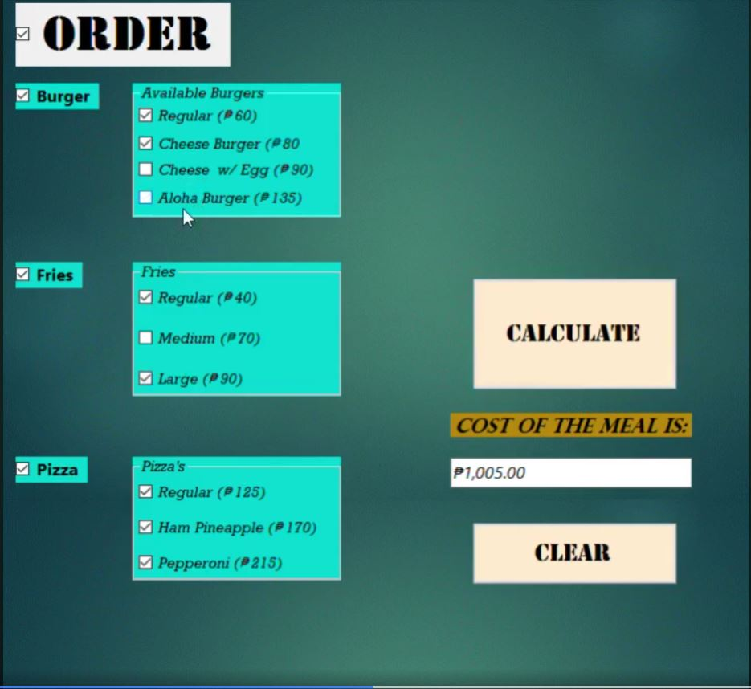
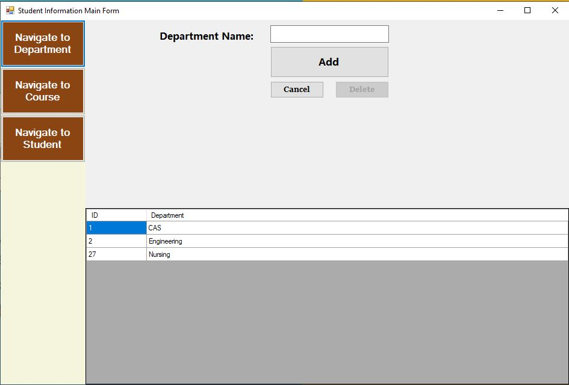

My Projects
Food Ordering
I made this meal ordering console application with Visual Basic. There is no database used. Instead, buttons are used to add things to the order list and checkboxes are used to show the available orders. Checkboxes allow users to choose items, while buttons allow them to add the meal of their choice to their order.
Student Inforamtion
This is a student information system created as a console application. The application allows users to input and manage student data, and it is connected to a Microsoft SQL database for storing and retrieving information